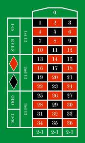

Rulett szabályok

A rulett szabályai első ránézésre egyszerűnek tűnnek, azonban a játék mélyebb megértése
több fontos elem megismerését igényli. A játék alapja egy számozott rekeszekkel ellátott kerék
és egy tétrakó asztal, amelyen a játékosok elhelyezik a tétjeiket. A keréken 37 rekesz található
(0–36), az amerikai változatban pedig egy extra dupla nulla (00) is szerepel, ami tovább növeli
a ház előnyét. A játékosok célja eltalálni, melyik rekeszben áll meg a golyó a kerék
megpörgetése után.
A kör a tétfelhelyezéssel kezdődik. A játékosok különböző típusú fogadásokat választhatnak,
amelyek két fő csoportba sorolhatók: belső és külső tétek. A belső fogadások a tábla középső
részén található számmezőkre helyezhetők el, és nagyobb kockázatot, de magasabb nyereményt
kínálnak. Például egyetlen számra tett tét (straight up) 35-szörös nyereményt biztosít, míg két
számot érintő tét (split) 17-szereset. A külső fogadások könnyebben érthetők és nagyobb eséllyel
nyernek: ilyen a piros vagy fekete mező, a páros vagy páratlan számok, valamint a kisebb (1–18)
vagy nagyobb (19–36) kategóriák. Ezek általában egy az egyhez fizetnek, de cserébe lényegesen
gyakoribb a találat.
Miután a fogadási idő lezárult, a krupié megpörgeti a rulettkereket az egyik irányba, majd az
ellenkező irányba útjára engedi a kis golyót. A feszültség fokozatosan nő, ahogy a golyó pattog,
lassul és végül megáll valamelyik rekeszben. A nyertes szám és szín ekkor válik ismertté. A
krupié kihirdeti az eredményt, összegyűjti a vesztes téteket és kifizeti a nyerteseket a
megfelelő oddsok alapján. A kör ezt követően azonnal új tétfelhelyezéssel folytatódik.
A rulett egyik fontos eleme a zöld színű nulla mező, amely a ház előnyét biztosítja. A nulla nem
tartozik sem páros, sem páratlan, sem piros, sem fekete kategóriába, így ha ide esik a golyó,
minden külső fogadás veszít. Egyes európai kaszinókban létezik az úgynevezett „La Partage” vagy
„En Prison” szabály, amely kedvez a játékosnak: ezek a külső téteknél részleges vagy ideiglenes
veszteségcsökkentést biztosítanak nulla esetén.
A játék során fontos figyelembe venni, hogy bár léteznek különböző stratégiák (például
Martingale vagy Fibonacci rendszer), a rulett alapvetően szerencsejáték, amelyben minden
pörgetés független az előzőektől. A szabályok pontos követése és a tétek megértése
nélkülözhetetlen ahhoz, hogy a játék szórakoztató és átlátható maradjon. A rulett egyszerre
elegáns, gyors és izgalmas játék, ahol a szerencse és a stratégia találkozik, és minden kör új
esélyt ad a nyerésre. A rulett szabályai első ránézésre egyszerűnek tűnnek, azonban a játék
mélyebb megértése több fontos elem megismerését igényli. A játék alapja egy számozott
rekeszekkel ellátott kerék és egy tétrakó asztal, amelyen a játékosok elhelyezik a tétjeiket. A
keréken 37 rekesz található (0–36), az amerikai változatban pedig egy extra dupla nulla (00) is
szerepel, ami tovább növeli a ház előnyét. A játékosok célja eltalálni, melyik rekeszben áll meg
a golyó a kerék megpörgetése után.
A kör a tétfelhelyezéssel kezdődik. A játékosok különböző típusú fogadásokat választhatnak,
amelyek két fő csoportba sorolhatók: belső és külső tétek. A belső fogadások a tábla középső
részén található számmezőkre helyezhetők el, és nagyobb kockázatot, de magasabb nyereményt
kínálnak. Például egyetlen számra tett tét (straight up) 35-szörös nyereményt biztosít, míg két
számot érintő tét (split) 17-szereset. A külső fogadások könnyebben érthetők és nagyobb eséllyel
nyernek: ilyen a piros vagy fekete mező, a páros vagy páratlan számok, valamint a kisebb (1–18)
vagy nagyobb (19–36) kategóriák. Ezek általában egy az egyhez fizetnek, de cserébe lényegesen
gyakoribb a találat.
Miután a fogadási idő lezárult, a krupié megpörgeti a rulettkereket az egyik irányba, majd az
ellenkező irányba útjára engedi a kis golyót. A feszültség fokozatosan nő, ahogy a golyó pattog,
lassul és végül megáll valamelyik rekeszben. A nyertes szám és szín ekkor válik ismertté. A
krupié kihirdeti az eredményt, összegyűjti a vesztes téteket és kifizeti a nyerteseket a
megfelelő oddsok alapján. A kör ezt követően azonnal új tétfelhelyezéssel folytatódik.
A rulett egyik fontos eleme a zöld színű nulla mező, amely a ház előnyét biztosítja. A nulla nem
tartozik sem páros, sem páratlan, sem piros, sem fekete kategóriába, így ha ide esik a golyó,
minden külső fogadás veszít. Egyes európai kaszinókban létezik az úgynevezett „La Partage” vagy
„En Prison” szabály, amely kedvez a játékosnak: ezek a külső téteknél részleges vagy ideiglenes
veszteségcsökkentést biztosítanak nulla esetén.
A játék során fontos figyelembe venni, hogy bár léteznek különböző stratégiák (például
Martingale vagy Fibonacci rendszer), a rulett alapvetően szerencsejáték, amelyben minden
pörgetés független az előzőektől. A szabályok pontos követése és a tétek megértése
nélkülözhetetlen ahhoz, hogy a játék szórakoztató és átlátható maradjon. A rulett egyszerre
elegáns, gyors és izgalmas játék, ahol a szerencse és a stratégia találkozik, és minden kör új
esélyt ad a nyerésre.